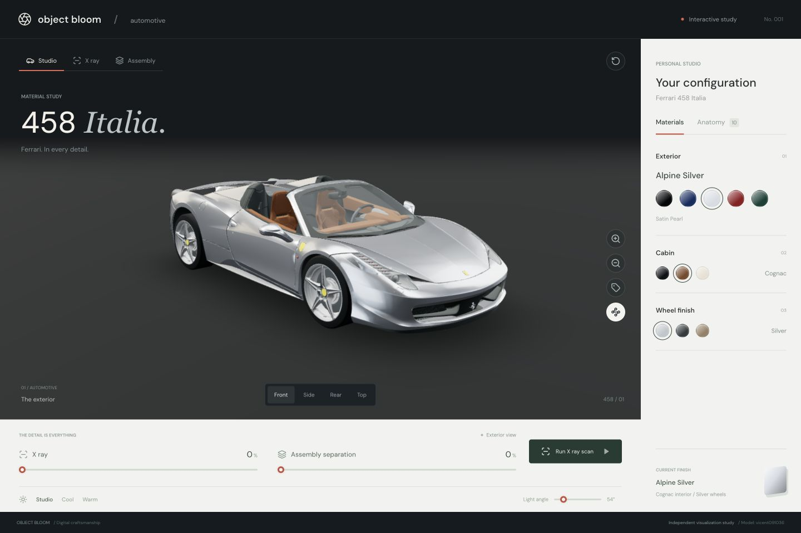

458 Italia.
One car. A closer look at every layer.

Loading the interactive car…
Assembled
Drag to rotate · Tap a part to inspect
Take it apart. Look inside.
Your next discovery
Select any part to meet it.
Try a door, wheel or headlamp. Its name and location appear here, with a close-up one click away.
Fully explode to arrange the details in an evenly spaced parts tray. Every piece, including the engine, stays in the final layout. Zoom in to inspect, or choose an assembly below for a closer view. Drag with two fingers (or right-drag with a mouse) to pan. Tap any part to learn more. Parts are scaled to fit each tray position; reassemble to see their actual relative sizes.